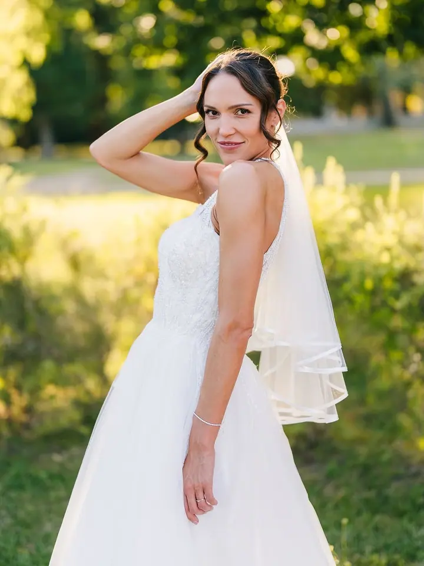
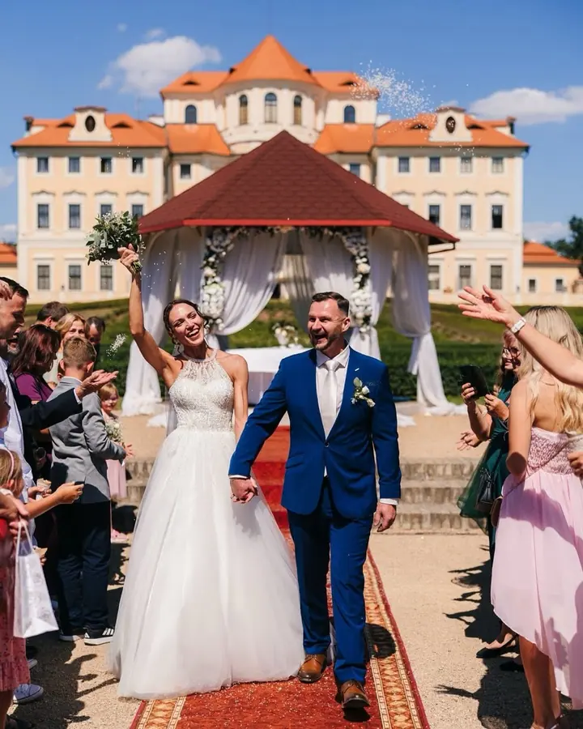
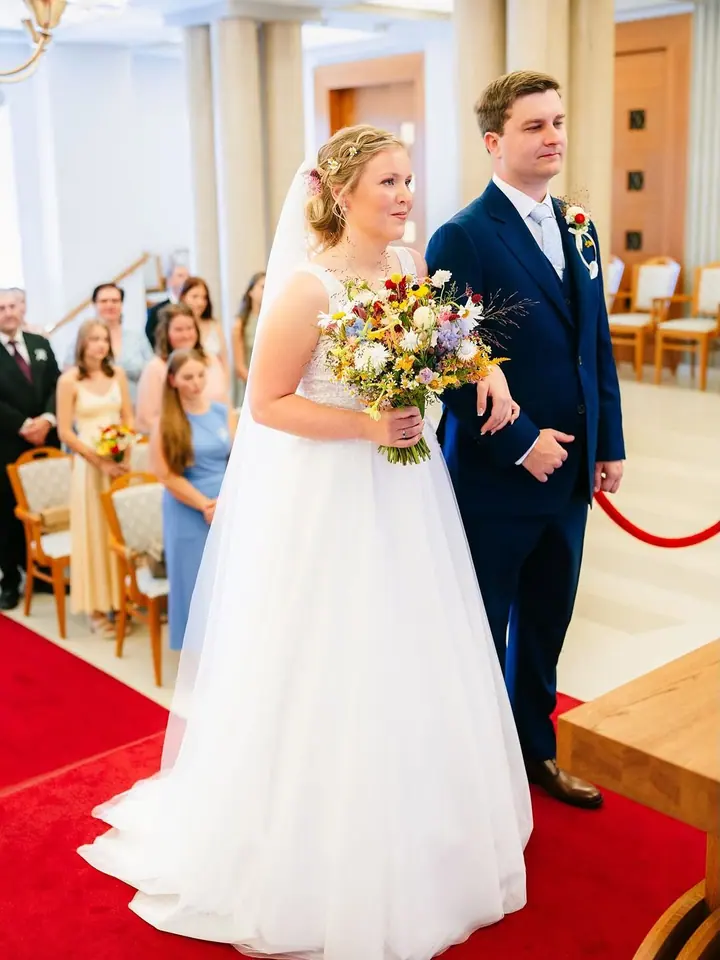
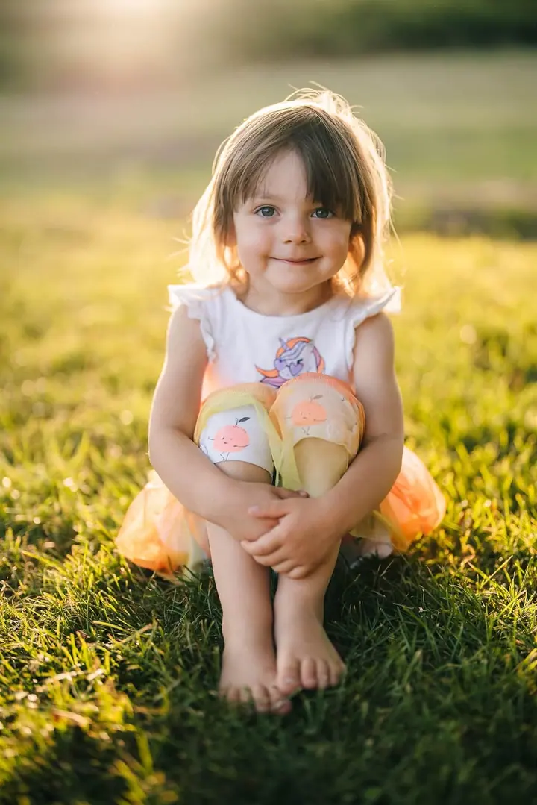

Svatební focení
Užijte si svůj den naplno, já se mezitím postarám o fotky. Vybrat si můžete z balíčků Mini, Standard a Celý den, který začíná ranními přípravami a končí ve 22 hodin.




Jmenuji se David Hašek a jsem svatební fotograf z Kladna. Fotím svatby v Praze, ve Středočeském kraji i jinde po celé republice a k tomu také rodiny, páry a děti. Fotím přirozeně, nenápadně a bez zbytečného pózování.
Více o mně„Fotím přirozeně, nenápadně a bez zbytečného pózování.“
— David Hašek
Užijte si svůj den naplno, já se mezitím postarám o fotky. Vybrat si můžete z balíčků Mini, Standard a Celý den, který začíná ranními přípravami a končí ve 22 hodin.
Pohodové focení bez stresu v parku, na procházce nebo přímo u vás doma. Během hodiny vyfotím rodinné fotky plné úsměvů.
Světlé, čisté a přirozené snímky, které pomohou ukázat váš domov v tom nejlepším světle.
Styl focení si domluvíme předem: venku v přírodě, při procházce městem nebo u vás doma. Cena začíná na 3 000 Kč a dostanete minimálně 20 upravených fotek.
Jmenuji se David Hašek a fotím z Kladna. Mám za sebou přes 150 svateb a šest let zkušeností. Nejvíc mě baví opravdové emoce, úsměvy a drobné okamžiky, kterých si během svatebního dne možná ani nevšimnete.
Během celého dne vám budu oporou. Pomůžu s organizací focení, poradím, když bude potřeba, a postarám se o to, abyste se před fotoaparátem cítili uvolněně. Každou fotku pak pečlivě vyberu a upravím, za jednou celodenní svatbou je zhruba 25 hodin práce u počítače.
Kromě svateb fotím rodiny, páry a těhotenské focení venku nebo u vás doma. Díky mobilnímu světlu nepotřebuji ateliér, prostor se přizpůsobí vám. A když chcete ukázat svůj domov v tom nejlepším světle, nafotím i reality.
Napište mi datum a místo svatby a já vám obratem dám vědět, jestli mám volno. Když vám žádný balíček nesedí, něco spolu vymyslíme.
Termín potvrdíme smlouvou a zálohou 5 000 Kč. U celodenního balíčku můžeme předem zdarma vyrazit na párové focení v okolí Kladna.
Fotím nenápadně a bez zbytečného pózování. Pomůžu vám s organizací focení, abyste si den mohli užít naplno.
Do dvou týdnů dostanete pečlivě vybrané a upravené fotografie v online galerii, odkud si je stáhnete.
Záleží na balíčku. Z celodenního focení dostanete minimálně 500 upravených fotek, ze Standardu minimálně 400. U rodinného, párového a těhotenského focení je to minimálně 20 fotek.
Ano, po podepsání smlouvy se platí záloha 5 000 Kč. Smlouvu si můžete předem v klidu přečíst.
Svatební fotky dodávám do dvou týdnů, rodinné do týdne. Všechny dostanete v online galerii.
Ano, fotím v Praze, ve Středočeském kraji i po celé republice. U svatebních balíčků Celý den a Standard je doprava zdarma.
davhasek@seznam.cz
Kladno · Praha · Středočeský kraj